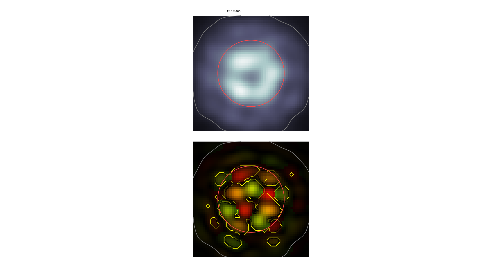
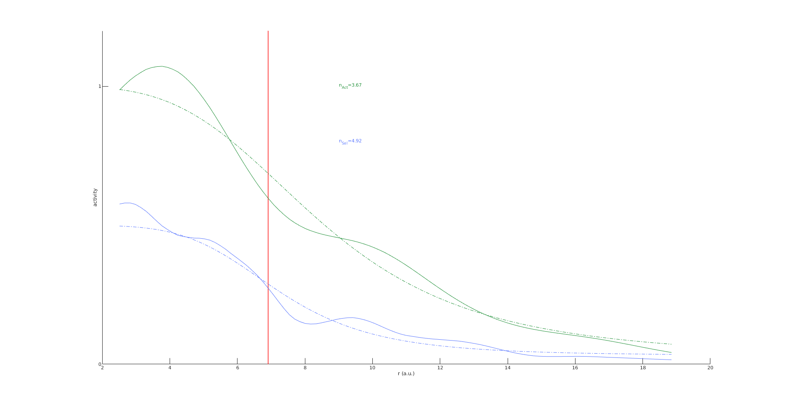
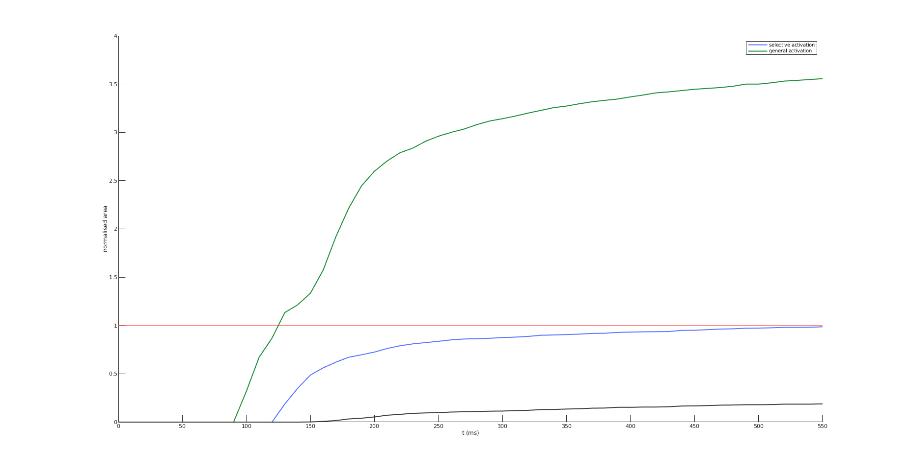
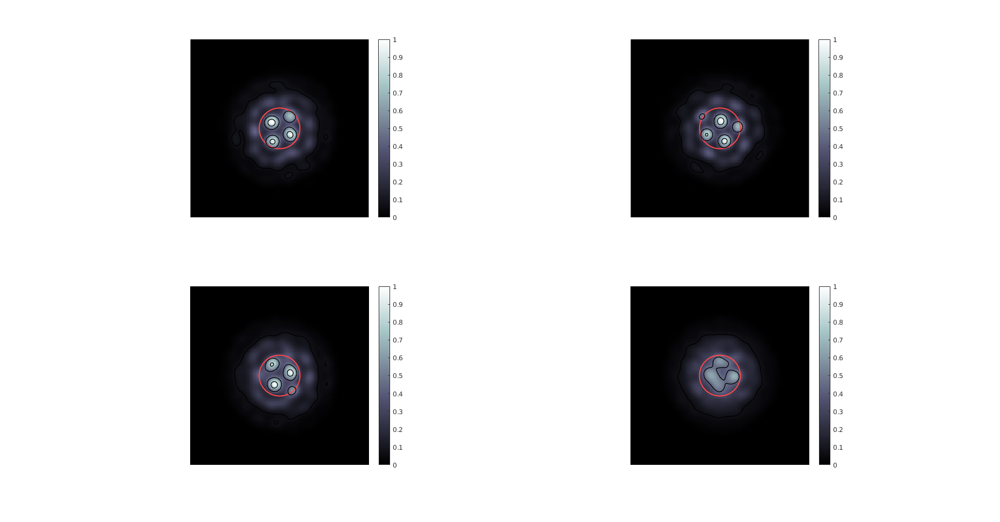
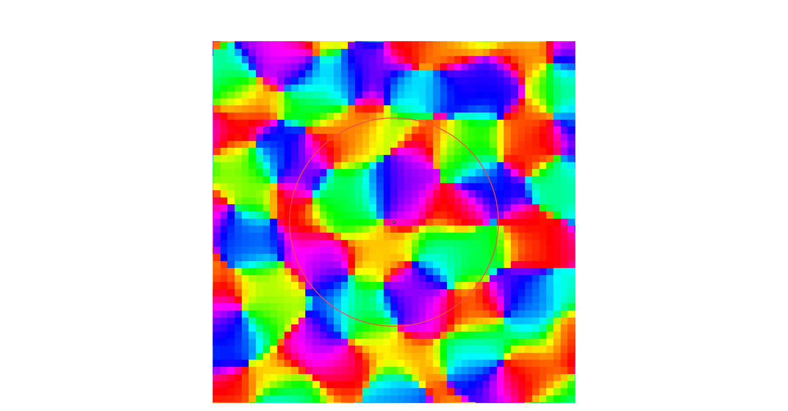

The authors of the paper:
Rankin J, Chavane F (2017) Neural field model to reconcile structure with function in primary visual cortex PLOS Computational Biology 13:1-30
http://dx.doi.org/10.1371/journal.pcbi.1005821
have made their matlab model available in a github repository:
https://github.com/QBME/rankin-chavane-neural-field/
Usage:
Following the supplied readme, running "RunModel" takes about a minute and generates the following figures:
Ones similar to Fig 7E in the paper:


Fig 5F:


